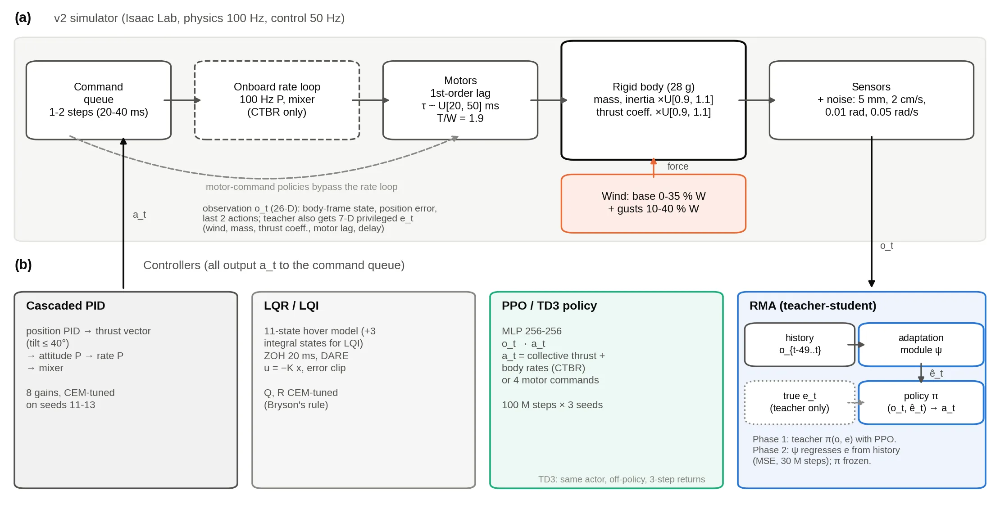
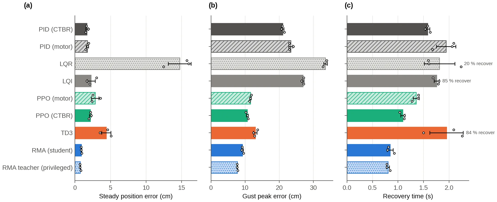
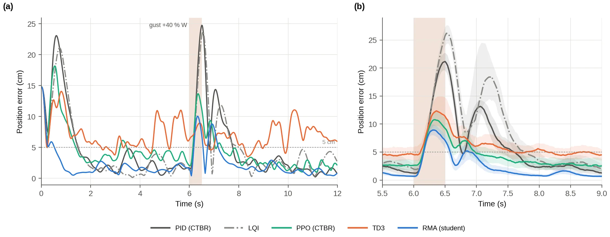
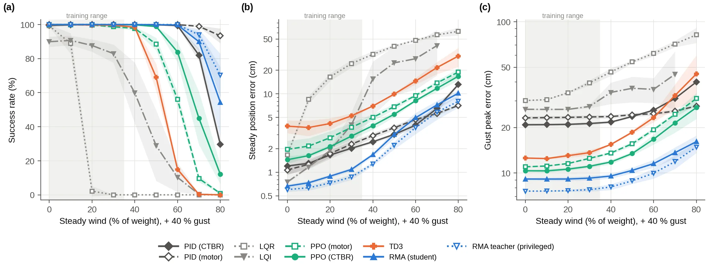
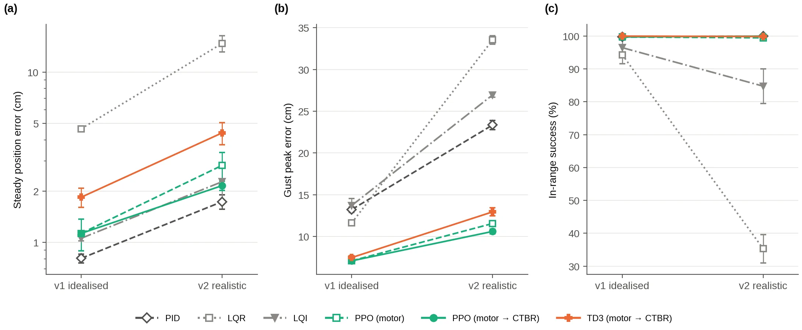
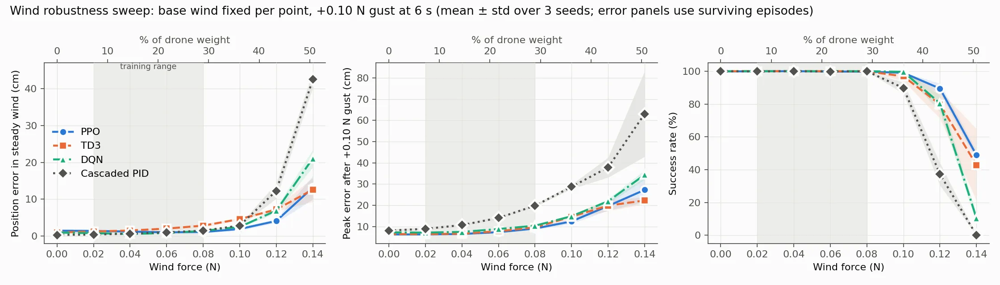
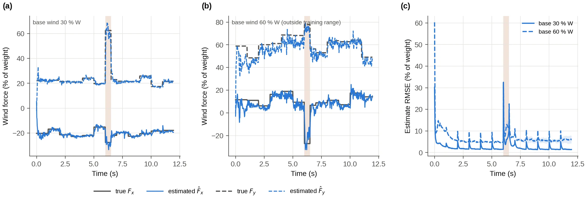
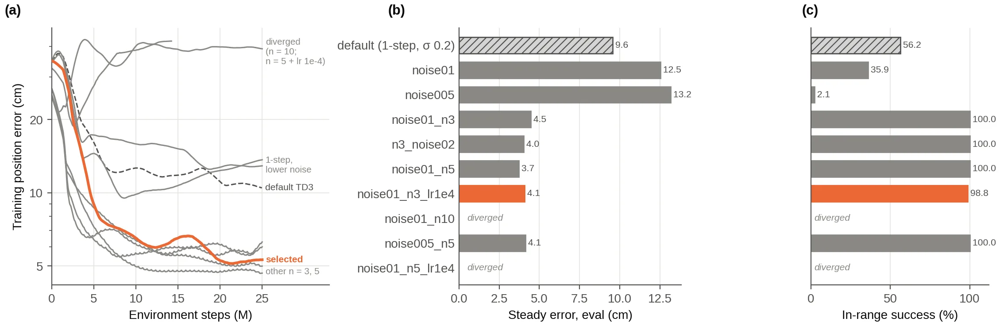
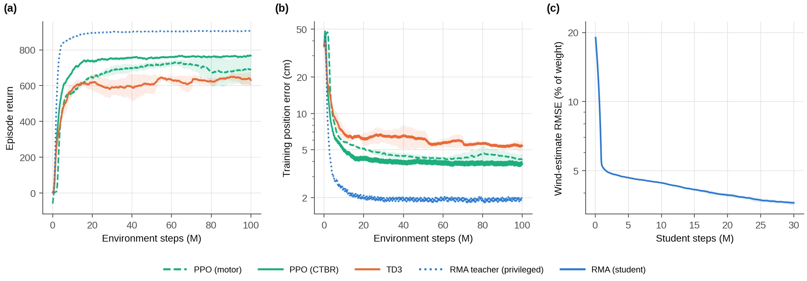
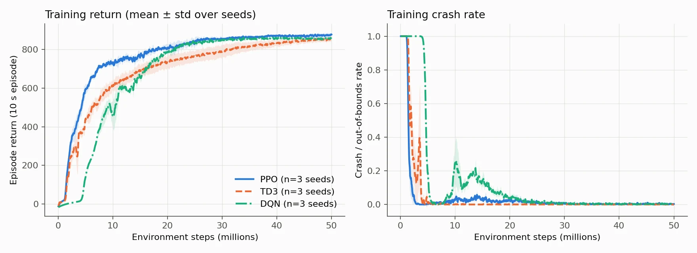

无人机抗风悬停：PID、LQR 与强化学习
在阵风里把一架 Crazyflie 级四旋翼稳在一个点上，该用串级 PID、LQR，还是强化学习策略？这项研究把 PID、LQR、LQI、PPO、TD3、DQN、RMA 七类控制器放进同一套 Isaac Lab 环境，按同一协议在理想和接近真实的两套仿真里评估，并给出 RL 输给 PID 的条件。
- 阵风峰值误差：RMA 自适应策略 vs PID
- 9.2 vs 21.0 cm
- 80% 机重强风下成功率：PID vs RL
- 93% vs ≤54%
- 每个控制器的评估规模
- 3 种子 × 512 回合
- 时间
- 2025–2026
- 技术栈
- Isaac Sim 4.5 · Isaac Lab 2.1 · PyTorch · PID · LQR/LQI · PPO · TD3 · DQN · RMA
- 环境
- Crazyflie 2.x（28.2 g），1024 架 GPU 并行；v1 理想电机，v2 加入电机滞后、20–40 ms 延迟、±10% 质量和推力、传感器噪声，推重比 1.9
- 我做的
- 两套风扰环境；PID、LQR、LQI 的实现和 CEM 自动调参；PPO、TD3、DQN 训练与 TD3 诊断、超参数研究；CTBR 动作接口；RMA 教师–学生训练；统一评估、作图和录像
- 结果
- v2 训练风力范围内，RMA 自适应策略三项指标都最好：稳态误差 0.90 cm、阵风峰值 9.2 cm、恢复 0.84 s，PID 分别是 1.66 cm、21.0 cm、1.58 s。但到 80% 机重的强风，PID 成功率 93%，RMA 54%，PPO 12%，TD3 0%。
- 评估
- 每个控制器 3 个种子（RL 是训练种子，PID/LQR/LQI 是独立调参种子）× 512 个回合，固定评估种子；外加 0–80% 机重的风力扫描
摘要
四旋翼的抗风悬停在工程上通常由串级 PID 完成，学术上则有 LQR 和强化学习（RL）两条路线，但三者很少在同一仿真、同一评估协议、同样的调参预算下比较。本文在 Isaac Lab 中搭建两套风扰悬停环境：v1 为理想执行器，v2 加入一阶电机滞后、指令延迟、质量与推力随机化和传感器噪声。对比对象为 CEM 自动调参的串级 PID、LQR、LQI，以及 PPO、TD3、DQN 和 RMA 风自适应教师–学生策略，每个控制器 3 个种子 × 512 个评估回合。结果：(1) 训练风力范围内，RMA 学生策略的稳态误差、阵风峰值和恢复时间分别比 PID 低 46%、56%、47%；(2) 风力超出训练范围后结论反转，80% 机重稳态风下 PID 成功率 93.4%，最好的 RL 策略 54.3%；(3) LQR/LQI 只在理想模型中有优势，加入执行器滞后后最脆弱；(4) TD3 在 v2 中的稳态偏差来自 1 步 TD 目标给 actor 的梯度过弱，改用 3 步回报后成功率从约 55% 升到 99.9%，但仍不及 PPO。
1 引言
悬停是四旋翼最基本的任务。风对机体的作用近似为一个未知、时变的外力：稳定风造成恒定偏差，阵风造成瞬时大偏离。PX4、Crazyflie 等开源飞控用位置–姿态–角速度三级串级 PID 处理它，靠积分项抵消恒定风；模型类方法（LQR）利用全状态反馈更快地响应扰动，但依赖模型；RL 策略可以直接从仿真数据学到非线性反馈，近年在四旋翼上已有不少成功案例 [7][8][9]。
已有对比往往只覆盖其中两类，或者在理想仿真中进行，RL 的优势是否在执行器滞后和延迟下仍然成立并不清楚。本文要回答三个问题：
- Q1：在同样的调参/训练预算下，RL 比调好的串级 PID 和 LQR 好在哪里、差在哪里？
- Q2：从理想仿真换到接近真实的仿真（sim gap），各类方法的性能分别损失多少？
- Q3：让 RL 在线估计风力（RMA）、或换一种动作接口（CTBR），能补上多少差距？
贡献：一套开源的两级保真度风扰悬停基准，所有方法共享观测、评估种子和成功判据；全部控制器的 3 种子对比（表 3–6，图 2–5）；一个 RMA 风力估计器，在训练范围内以 2% 机重的 RMSE 跟踪真实风力（图 7）；对 TD3 在 v2 中失效的诊断和 10 组超参数研究（图 8，表 10）。
3 方法


| 方法 | 怎么工作 | 输入 → 输出 | 需要调的东西 |
|---|---|---|---|
| 串级 PID （比例–积分–微分，多环嵌套） | 位置 PID 算出期望推力向量（倾角 ≤ 40°）→ 倾角优先的姿态 P 环 [4] → 角速度 P 环 → 混控分配到四个电机 | 位置、速度、姿态、陀螺仪 → 4 个电机指令（或 CTBR） | 8 个增益，CEM 自动调 |
| LQR （线性二次型调节器 [1]） | 在悬停点线性化为 12 状态小角度模型，按 50 Hz 零阶保持离散化后解离散 Riccati 方程，得到固定的状态反馈增益；位置误差限幅防饱和 | 12 维状态 → 总推力 + 3 个力矩 → 电机 | Q/R 权重（Bryson 法则 [2]，10 个最大允许值）+ 限幅，CEM 调 |
| LQI （带积分的 LQR） | LQR 状态再加 3 维位置误差积分，消除恒定扰动造成的稳态偏差；条件积分防积分饱和 | 状态 + 位置误差积分 → 推力 + 力矩 | LQR 的参数 + 2 个积分权重 |
| PPO （近端策略优化 [5]） | 同策略 actor-critic：用当前策略采样，更新时裁剪新旧策略比值，防止一步改得太多；GAE 估计优势 | 18 维（v1）/ 26 维（v2）观测 → 4 维连续动作 | 1024 环境 × 32 步，5 轮 × 4 小批，裁剪 0.2，γ 0.99，λ 0.95，网络 256-128-64 |
| TD3 （双延迟 DDPG [6]） | 异策略、确定性 actor：两个 Q 网络取较小值抑制高估，目标动作加噪声平滑，actor 每 2 步更新一次；v2 用 3 步回报（第 6 节） | 同上 → 4 维连续动作 | 200 万回放池，batch 4096，网络 256-256；v2：学习率 1e-4，探索/目标噪声 0.1 |
| DQN （深度 Q 网络 [13]，Double DQN [14] + 3 步回报） | 只输出离散动作：每个电机三档转速，共 81 种组合，学习每种组合的 Q 值 | 同上 → 81 选 1 | 学习率 1e-4，目标网络软更新 0.001 |
| CTBR 动作接口 （Collective Thrust + Body Rates [9]） | 策略输出总推力和三个机体角速度设定值，由机上 100 Hz 角速度 P 环和混控转成电机指令；真机飞控普遍接受这种指令 | [T, ωx, ωy, ωz] → 电机 | 角速度增益 20/20/10 s⁻¹，最大角速度 4/4/2 rad/s |
| RMA 教师 （Rapid Motor Adaptation [10]） | PPO-CTBR 策略额外看到 7 维特权信息 e | 观测 + e → CTBR | 同 PPO，1 亿步 |
| RMA 学生 | 冻结教师；适配模块只用过去 1 秒（50 步）的观测和动作估计 e，估计值喂给教师。用学生自己飞出来的数据做回归（DAgger 式 [15]） | 50 × 26 维历史 → ê → 教师 → CTBR | MLP 1300-256-128-7，3000 万步 |
经典控制器的调参用交叉熵方法 CEM [16]：每轮随机采样一批参数，各在 1024 个并行回合里飞一遍，取最好的一部分更新采样分布。调参用种子 11–13，从不使用评估种子。为了让 LQR 的比较公平：在 Bryson 归一化坐标下解 Riccati 方程（原始权重范围大时数值失败）；初值从 Bryson 估计出发；像 PID 的倾角限制一样给位置误差加可调限幅；LQI 用条件积分。这些处理去掉的是实现问题造成的坠机，剩下的差距才算 LQR 本身的。
状态表示。所有量都在机体坐标系下：位置误差、机体系重力方向、线速度、角速度；v2 再加最近 2 步动作。姿态不用欧拉角：偏航随机时欧拉角在 ±π 处跳变，预实验中 PPO 坠机率 15%，换成机体系重力方向后降到 0.2%。
奖励（v1、v2 相同）：靠近目标加分，扣速度和角速度的平方项；v2 再扣动作变化量，抑制抖动。
4 实验设置
共用部分：Crazyflie 2.x（28.2 g，重力 0.277 N），目标点 (0, 0, 1) m，起点随机偏离 ±0.2 m、偏航随机；物理 100 Hz、控制 50 Hz，1024 个环境 GPU 并行。风是世界坐标系下作用在质心的水平力，每秒随机波动 ±20%，训练时随机出现阵风脉冲。
| v1 理想仿真 | v2 接近真实 | |
|---|---|---|
| 电机 | 4500–5500 RPM，瞬时响应；总推力 0.81–1.21 倍机重 | 推重比 1.9；一阶滞后，时间常数随机 20–50 ms |
| 指令延迟 | 无 | 1–2 个控制周期（20–40 ms） |
| 参数随机化 | 无 | 质量/惯量、推力系数各 ×U[0.9, 1.1] |
| 传感器噪声 | 无 | 位置 5 mm，速度 2 cm/s，姿态 0.01 rad，陀螺 0.05 rad/s |
| 观测 | 18 维机体系状态 | 18 维 + 最近 2 步动作 = 26 维 |
| 动作 | 4 个电机指令 | 4 个电机指令，或 CTBR |
| 训练风力 | 0.02–0.08 N（机重 7–29%）+ 阵风 0.03–0.10 N | 0–35% 机重 + 阵风 10–40% |
| 评估阵风 | +0.10 N（36%） | +40% |
评估协议。每回合 12 秒，基础风在训练范围内随机取大小和方向，第 6 秒从随机方向加 0.5 秒阵风；512 个回合，评估种子 1000；结果为 3 个种子的均值 ± 标准差。指标定义：
- 稳态误差：2–6 秒内与目标点的平均真实距离（不是带噪声的测量值）。
- 阵风峰值：阵风开始后的最大误差。
- 恢复时间：从阵风开始，到误差回到 5 cm 内并保持 0.5 秒；只对能恢复的回合求均值，并单列恢复比例。
- 成功：12 秒内没坠机，且最后 2 秒平均误差小于 10 cm。
- 风力扫描：把基础风固定在 0–80% 机重（训练只到 35%），同样加 40% 阵风，测外推能力。
| v1 | v2 | |
|---|---|---|
| RL | PPO / TD3 / DQN，各 3 种子 × 5000 万步 | PPO-电机、PPO-CTBR、RMA 教师、TD3-CTBR，各 3 种子 × 1 亿步（单卡约 1 小时/种子）；RMA 学生每个教师 3000 万步 |
| PID / LQR / LQI | CEM，每轮 1024 个并行回合（PID 20 轮，LQR/LQI 30 轮），调参种子 11–13，8 秒回合、第 4 秒加阵风；PID 约 10 分钟调完 | |
5 结果
5.1 接近真实的仿真（v2）：训练风力范围内
- RMA 教师
- 7.7
- RMA 学生
- 9.2
- PPO-CTBR
- 10.6
- PPO-电机
- 11.6
- TD3-CTBR
- 13.0
- PID-CTBR
- 21.0
- PID-电机
- 23.4
- LQI
- 27.0
- LQR
- 33.5
| 控制器 | 稳态误差 (cm) | 阵风峰值 (cm) | 恢复 (s) | 恢复比例 | 成功 | 坠机 |
|---|---|---|---|---|---|---|
| 串级 PID（CTBR） | 1.66 ± 0.17 | 21.0 ± 0.4 | 1.58 ± 0.04 | 99.8% | 99.9% | 0.1% |
| 串级 PID（电机指令） | 1.73 ± 0.17 | 23.4 ± 0.6 | 1.94 ± 0.19 | 99.8% | 100% | 0% |
| LQR | 14.72 ± 1.61 | 33.5 ± 0.5 | 1.81 ± 0.30 | 20.4% | 35.3% | 0.8% |
| LQI | 2.27 ± 0.57 | 27.0 ± 0.3 | 1.76 ± 0.05 | 84.8% | 84.8% | 14.4% |
| PPO（电机指令） | 2.83 ± 0.54 | 11.6 ± 0.2 | 1.35 ± 0.06 | 98.6% | 99.5% | 0.5% |
| PPO（CTBR） | 2.15 ± 0.13 | 10.6 ± 0.3 | 1.09 ± 0.04 | 99.3% | 100% | 0% |
| TD3（CTBR） | 4.39 ± 0.65 | 13.0 ± 0.5 | 1.95 ± 0.33 | 83.9% | 99.9% | 0% |
| RMA 学生（CTBR，在线估计风力） | 0.90 ± 0.05 | 9.2 ± 0.2 | 0.84 ± 0.06 | 100% | 100% | 0% |
| RMA 教师（看得到真实风力，上界） | 0.74 ± 0.06 | 7.7 ± 0.1 | 0.80 ± 0.03 | 100% | 100% | 0% |


- RMA 学生是可部署控制器中三项都最好的：比 PID-CTBR 稳态误差低 46%、阵风峰值低 56%、恢复快 47%；比同为 CTBR 的普通 PPO 分别低 58%、13%、23%。
- 阵风响应上所有 RL 都明显好于经典控制：最差的 RL（TD3，13.0 cm）也比最好的经典控制器（PID-CTBR，21.0 cm）低 38%。
- 稳态精度上普通 RL 不如 PID：PPO-CTBR 2.15 cm、TD3 4.39 cm，PID 1.66 cm。只有加了风力估计的 RMA 超过 PID。
- TD3 的恢复时间长是阈值效应：它的残余偏差 4–5 cm，紧贴 5 cm 的恢复阈值，16% 的回合始终没跨过去；它的阵风峰值只比 PPO 高 23%。
- DQN 的三档离散动作表达不了 v2 更宽的推力范围和 CTBR 设定值，没有参加 v2 对比。
5.2 阵风时间响应


RL 策略的误差峰值出现得更早（约 6.3 s，经典控制约 6.5 s），而且没有第二个峰。PID 和 LQI 在阵风结束后有 13–18 cm 的反向超调：阵风期间积分项累积，阵风撤掉后需要时间放掉。RL 策略没有需要放空的积分状态。图 3(b) 也直接显示了 TD3 的问题：阵风前后它都停在 4.5–5 cm，而不是回到 0。
5.3 超出训练范围的风


| 控制器 | 40% | 50% | 60% | 70% | 80% |
|---|---|---|---|---|---|
| PID-CTBR | 99.9% | 99.9% | 99.3% | 82.0% | 29.6% |
| PID-电机 | 100% | 99.7% | 99.9% | 99.0% | 93.4% |
| LQR | 0% | 0% | 0% | 0% | 0% |
| LQI | 59.8% | 28.8% | 10.2% | 0.3% | 0% |
| PPO-电机 | 97.7% | 88.5% | 56.0% | 9.6% | 0.8% |
| PPO-CTBR | 99.8% | 98.8% | 83.9% | 45.0% | 12.0% |
| TD3-CTBR | 98.4% | 68.9% | 14.9% | 0.3% | 0% |
| RMA 学生 | 100% | 99.9% | 99.7% | 89.9% | 54.3% |
| RMA 教师（上界） | 100% | 100% | 100% | 93.9% | 70.2% |
风一超出训练范围，结论就反转了。PID-电机到 80% 机重仍有 93.4% 成功率；RL 里最好的 RMA 学生是 54.3%，PPO-CTBR 12.0%，TD3 在 60% 就只剩 14.9%。积分器会一直累积，直到抵消任意大小的恒定风；策略网络只在见过的输入范围里可靠。阵风峰值（图 4c）则相反：RMA 在所有风力下都最低，说明 RL 输在稳态的“够不够力”，而不是对扰动的反应速度。LQR 在 40–60% 风力下其实很少坠机，成功率为 0 是因为没有积分项，稳态偏差超过了 10 cm 的成功阈值。
5.4 从理想仿真到接近真实的仿真
| 控制器 | 稳态误差 (cm) | 阵风峰值 (cm) | 恢复 (s) | 成功 | 43% 风 | 51% 风 |
|---|---|---|---|---|---|---|
| 串级 PID | 0.81 ± 0.05 | 13.2 ± 0.3 | 1.10 ± 0.02 | 99.7% | 37.2% | 0.1% |
| LQR | 4.65 ± 0.07 | 11.6 ± 0.1 | 1.22 ± 0.01 | 94.3% | 1.8% | 0% |
| LQI | 1.06 ± 0.04 | 13.7 ± 0.8 | 1.35 ± 0.23 | 96.5% | 12.2% | 6.1% |
| PPO | 1.13 ± 0.24 | 7.1 ± 0.3 | 0.54 ± 0.04 | 99.7% | 89.5% | 48.8% |
| TD3 | 1.84 ± 0.24 | 7.5 ± 0.2 | 0.62 ± 0.04 | 100% | 79.8% | 42.8% |
| DQN | 0.80 ± 0.14 | 8.4 ± 0.1 | 0.63 ± 0.01 | 100% | 80.5% | 10.4% |


| 控制器 | v1 (cm) | v2 (cm) | 倍数 |
|---|---|---|---|
| PPO（电机 → CTBR） | 7.1 | 10.6 | ×1.49 |
| PPO（电机 → 电机） | 7.1 | 11.6 | ×1.63 |
| TD3（电机 → CTBR） | 7.5 | 13.0 | ×1.73 |
| 串级 PID（电机） | 13.2 | 23.4 | ×1.77 |
| LQI | 13.7 | 27.0 | ×1.97 |
| LQR | 11.6 | 33.5 | ×2.89 |
- 模型类方法受 sim gap 影响最大。LQR 在 v1 的阵风峰值比 PID 低（11.6 vs 13.2 cm），到 v2 反而高 43%；它的模型里没有电机滞后和延迟，增益是按无滞后系统算的。
- RL 退化最少。PPO-CTBR 的峰值只放大 1.49 倍。RL 在 v2 里是在带滞后、延迟和随机参数的环境中直接训练的，等于把这些因素学进了策略。
- v1 里 RL 扛强风更好，v2 里不成立。v1 电机推力最多只有机重的 1.21 倍，43–51% 的风下所有控制器都在推力饱和边缘；RL 训练时见过大量饱和，会用满执行器余量（PPO 89.5% vs PID 37.2%）。v2 推重比 1.9，饱和不再是瓶颈，积分器的优势显出来了。
- DQN 的稳态误差最小（0.80 cm），是因为三档开关式控制训好后在目标点附近做极小幅度的来回切换；代价是动作集固定，换到 v2 就不适用。


5.5 动作接口：电机指令还是 CTBR
| 指标 | 电机指令 | CTBR | 变化 |
|---|---|---|---|
| 稳态误差 | 2.83 cm | 2.15 cm | −24% |
| 阵风峰值 | 11.6 cm | 10.6 cm | −9% |
| 恢复时间 | 1.35 s | 1.09 s | −19% |
| 70% 风力成功率 | 9.6% | 45.0% | ×4.7 |
快速的角速度稳定交给机上 100 Hz 的环，策略只需决定“往哪倾、推多大”，学习问题更简单；训练曲线上 CTBR 的回报更高、种子间更一致（图 9）。真机飞控本来就接受 CTBR 指令，所以它也更容易部署。PID 则相反：用电机指令时强风下更稳（80% 风力成功率 93% vs 30%）。
5.6 RMA：在线估计风力
普通 PPO 只看到当前状态，不知道此刻风有多大，只能学一个对所有风力都凑合的策略。RMA 先训练一个能直接看到真实风力和机体参数的教师，再训练适配模块：只看过去 1 秒的状态和自己发出的动作——“推力给了这么多，飞机却往那边漂”——反推这些参数，交给教师使用。
| 指标 | PPO-CTBR | RMA 学生 | RMA 教师（上界） |
|---|---|---|---|
| 稳态误差 | 2.15 cm | 0.90 cm（−58%） | 0.74 cm |
| 阵风峰值 | 10.6 cm | 9.2 cm（−13%） | 7.7 cm |
| 恢复时间 | 1.09 s | 0.84 s（−23%） | 0.80 s |
| 80% 风力成功率 | 12.0% | 54.3% | 70.2% |


| 基础风 | 稳定段 RMSE（2–6 s） | 阵风期间 RMSE | 稳定段偏差 | 相关系数 |
|---|---|---|---|---|
| 30%（训练范围内） | 2.0 | 9.3 | −0.2 | 0.994 |
| 60%（训练范围外） | 5.2 | 12.7 | −2.7 | 0.994 |
估计得准，说明 RMA 的提升确实来自“知道了风多大”。学生与教师在三项指标上相差 5–19%，剩下的主要是阵风刚来时的估计滞后：1 秒的历史窗口对阶跃变化要 0.1–0.2 秒才能跟上。训练范围外估计整体偏低 2.7%，这也是 RMA 在 80% 风力下仍不如 PID 的原因之一。
6 TD3 超参数研究
TD3 在 v1 中与 PPO 接近（表 6），但在 v2 中用原论文的默认超参数 [6]（探索噪声 0.2，目标噪声 0.2、裁剪 0.5，1 步 TD 目标，学习率 3e-4）时，悬停时一直偏离约 10 cm，成功率只有 54%。为了让对比公平，先诊断原因，再做超参数研究。
诊断。误差是固定偏移，不是抖动：在 0 / 15 / 30% 稳态风下平均偏移 5.3 / 8.0 / 12.0 cm（PPO 0.9 / 1.3 / 2.1 cm），而 RMS 抖动只有 2–3 cm，且无风时也存在。Critic 没有系统性高估（Q 值与实际回报之比在无风时 −30%、30% 风时 +27%，方向不一致），偏航转动和指令抖动也与 PPO 相当。结论是确定性 actor 本身不够精确：50 Hz 控制下相邻两步的状态差别很小，1 步 TD 目标给 actor 的梯度又弱又噪，拉不到目标点上。由此推出两个调整方向：用 n 步回报加强信用分配，以及降低噪声。


| 配置（相对默认的改动） | 稳态 (cm) | 阵风峰值 (cm) | 成功 | 30% 风成功 | 偏移 (cm) |
|---|---|---|---|---|---|
| 默认：噪声 0.2，1 步，lr 3e-4 | 9.55 | 21.7 | 56.2% | 6.6% | 1.5 / 12.6 |
| 噪声 0.1 | 12.54 | 26.6 | 35.9% | 0% | 4.3 / 16.7 |
| 噪声 0.05 | 13.18 | 25.9 | 2.1% | 0% | 10.2 / 14.3 |
| 噪声 0.2 + 3 步 | 4.02 | 13.0 | 100% | 99.6% | 1.9 / 5.4 |
| 噪声 0.1 + 3 步 | 4.46 | 14.2 | 100% | 99.6% | 2.3 / 5.1 |
| 噪声 0.1 + 5 步 | 3.73 | 13.9 | 100% | 100% | 1.4 / 5.1 |
| 噪声 0.05 + 5 步 | 4.13 | 15.0 | 100% | 100% | 1.0 / 6.1 |
| 噪声 0.1 + 3 步 + lr 1e-4（选用） | 4.08 | 12.5 | 98.8% | 98.8% | 3.5 / 4.7 |
| 噪声 0.1 + 10 步 | 发散：370 万步起 Q 损失 > 10⁴，所有回合坠机 | ||||
| 噪声 0.1 + 5 步 + lr 1e-4 | 发散：约 400 万步时回报崩溃 | ||||
- n 步回报是关键。只要用 3 或 5 步回报，稳态误差就从 9.6 cm 降到 3.7–4.5 cm，30% 风下成功率从 7% 升到 99–100%。
- 只降噪声反而更差。探索变少后 1 步 critic 学得更慢，偏移更大（成功率 36% → 2%）。
- 回报步数不能太长。10 步回报的目标方差太大，critic 发散；5 步配合低学习率也会在约 400 万步时崩溃。
- 选用配置按阵风峰值（最低 12.5 cm）和 30% 风下偏移（最小 4.7 cm）选出，再按正式预算训练 3 个种子 × 1 亿步，得到表 4 的结果。即便如此，它在每项指标上仍不如 PPO-CTBR，外推也更差（60% 风力 14.9% vs 83.9%）。
7 讨论：PID、LQR、RL 怎么选
为什么用串级 PID 做基线
真机上就是它在飞：PX4 和 Crazyflie 固件都用位置 → 姿态 → 角速度三级 PID，所以“RL 能不能比 PID 好”是工程上真正要回答的问题。调好之后它是个强基线：CEM 调 8 个增益，3 个独立调参种子的结果相差只有几个百分点；v1 里稳态误差 0.81 cm，与最好的 RL 持平；v2 里强风下最稳。
加上 LQR 之后怎样
- 赢在模型准确时的阵风响应。v1 模型完美、无延迟，LQR 阵风峰值比 PID 低（11.6 vs 13.2 cm）：全状态反馈同时用速度和姿态，对扰动反应更快。加了积分的 LQI 稳态误差和 PID 接近（1.06 vs 0.81 cm）。
- 输在恒定扰动。纯 LQR 没有积分项，恒定风和 v2 里随机的质量、推力都会留下固定偏差：v1 4.65 cm，v2 14.7 cm，PID 是 0.81 / 1.73 cm。LQI 能消掉（1.06 / 2.27 cm）。
- 输在饱和。线性控制律不知道电机有上限。即使加了限幅和条件积分，v1 里仍有 3–6% 坠机，43% 风力下成功率 2–12%，有倾角限制的 PID 是 37%。
- 输在模型误差和延迟。v2 里 LQI 成功率 84.8%、坠机 14.4%（PID 100%）；60% 风力只剩 10%，PID 99.9%。PID 逐环低增益的结构对 20–90 ms 的未建模滞后容忍得多。
在这个问题上，LQR 只在理想模型里比 PID 好，换成接近真实的执行器就不如 PID。
RL 相比 PID 和 LQR 的优缺点
- 优点：抗阵风好得多。v2 里 RMA 阵风峰值 9.2 cm，PID 21.0 cm，LQI 27.0 cm；没有积分器造成的二次超调（图 3）。
- 优点：对 sim gap 最不敏感。直接在带滞后、延迟的环境里训练，阵风峰值只放大 1.5 倍，LQR 是 2.9 倍（表 7）。
- 优点：加上 RMA 后能在线辨识风力，稳态误差也最好（0.90 cm，PID 1.66 cm）。
- 缺点：只在训练范围附近好用。风力超过 60% 机重后，PID-电机仍有 93–99% 成功率，PPO 掉到 1–12%，RMA 54%，TD3 0%。
- 缺点：成本高、对算法细节敏感。每个种子 1 亿步仿真，还要设计观测、动作接口、随机化和奖励；TD3 在 v2 需要专门的超参数研究（第 6 节）才能稳定悬停。PID 是 8 个可解释的增益，约 10 分钟调完，稳定裕度也有成熟的分析方法。
| 说法 | 成立吗 | 依据 |
|---|---|---|
| RL 抗阵风比 PID/LQR 好（峰值、恢复） | 成立，v1 和 v2 都是 | v1 PPO 7.1 vs PID 13.2 cm；v2 RMA 9.2 vs 21.0 cm，0.84 vs 1.58 s |
| RL 稳态悬停精度最好 | 只有加了自适应才成立 | v2 RMA 0.90 cm 最好；PPO 2.15、TD3 4.39 cm，都比 PID 1.66 cm 差 |
| RL 比 PID 更能扛强风 | v2 不成立；v1 成立（推力饱和场景） | v2 80% 风力：PID-电机 93%，RMA 54%，PPO 12%；v1 43%：PPO 89.5%，PID 37% |
| RMA 比普通 RL 好 | 成立 | 稳态 −58%，峰值 −13%，恢复 −23%；80% 风力 54.3% vs 12.0% |
| 适配模块真的在估计风 | 成立 | 范围内 RMSE 2% 机重，相关系数 0.994 |
| CTBR 是更好的 RL 动作接口 | 成立（PPO） | 稳态 −24%，恢复 −19%，70% 风力 45% vs 9.6% |
| LQR 比 PID 好 | 不成立 | 只在理想 v1 里阵风峰值更低；稳态偏差、饱和、延迟鲁棒性都更差 |
| TD3 与 PPO 相当 | v1 基本成立，v2 不成立 | v1 峰值 7.5 vs 7.1 cm；v2 稳态 4.39 vs 2.15 cm，60% 风力 14.9% vs 83.9% |




8 局限
- 只在仿真里。风被简化成作用在质心的水平力，没有桨叶气动、地面效应和风对姿态的力矩；还没上实机。
- DQN 没有参加 v2 对比。三档离散动作表达不了 v2 更宽的推力范围，需要重新设计动作集。
- RL 的强风结论依赖训练分布。训练风力扩大到 0–80% 后 RL 在强风下会怎样，本文没有测。
- TD3 超参数研究只用 1 个种子、2500 万步。n 步回报各组之间的差别（3.7–4.5 cm）与正式训练的种子间标准差（0.65 cm）相当，组间排序不一定稳定；结论“n 步回报是关键”在所有组上一致。
- 没有和自适应经典控制比。扰动观测器（DOB）、增量非线性动态逆（INDI）[12] 也能在线补偿风力，可能是 RMA 更直接的对手。
参考文献
- [1] R. E. Kalman. Contributions to the theory of optimal control. Boletín de la Sociedad Matemática Mexicana, 1960.
- [2] A. E. Bryson, Y.-C. Ho. Applied Optimal Control. Hemisphere, 1975.
- [3] S. Bouabdallah, A. Noth, R. Siegwart. PID vs LQ control techniques applied to an indoor micro quadrotor. IROS, 2004.
- [4] D. Brescianini, R. D'Andrea. Tilt-prioritized quadrocopter attitude control. IEEE Transactions on Control Systems Technology, 2020.
- [5] J. Schulman, F. Wolski, P. Dhariwal, A. Radford, O. Klimov. Proximal policy optimization algorithms. arXiv:1707.06347, 2017.
- [6] S. Fujimoto, H. van Hoof, D. Meger. Addressing function approximation error in actor-critic methods. ICML, 2018.
- [7] J. Hwangbo, I. Sa, R. Siegwart, M. Hutter. Control of a quadrotor with reinforcement learning. IEEE Robotics and Automation Letters, 2017.
- [8] A. Molchanov et al. Sim-to-(multi)-real: transfer of low-level robust control policies to multiple quadrotors. IROS, 2019.
- [9] E. Kaufmann, L. Bauersfeld, D. Scaramuzza. A benchmark comparison of learned control policies for agile quadrotor flight. ICRA, 2022.
- [10] A. Kumar, Z. Fu, D. Pathak, J. Malik. RMA: Rapid motor adaptation for legged robots. RSS, 2021.
- [11] M. O'Connell et al. Neural-Fly enables rapid learning for agile flight in strong winds. Science Robotics, 2022.
- [12] E. J. J. Smeur, Q. Chu, G. C. H. E. de Croon. Adaptive incremental nonlinear dynamic inversion for attitude control of micro air vehicles. Journal of Guidance, Control, and Dynamics, 2016.
- [13] V. Mnih et al. Human-level control through deep reinforcement learning. Nature, 2015.
- [14] H. van Hasselt, A. Guez, D. Silver. Deep reinforcement learning with double Q-learning. AAAI, 2016.
- [15] S. Ross, G. Gordon, D. Bagnell. A reduction of imitation learning and structured prediction to no-regret online learning. AISTATS, 2011.
- [16] R. Y. Rubinstein, D. P. Kroese. The Cross-Entropy Method. Springer, 2004.